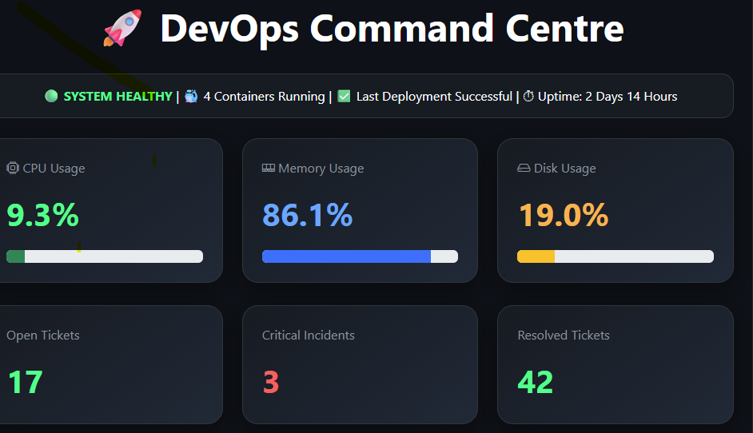

Technical Support Engineer • Microsoft 365 • Automation • DevOps
Experienced Technical Support professional with a passion for cloud technologies, automation, infrastructure monitoring and modern DevOps practices.
I started my career as a DevOps Engineer Graduate in a fintech environment, gaining experience with cloud technologies, automation, monitoring solutions and infrastructure management. Today, I work as a Technical Support Engineer, supporting Microsoft 365 environments, troubleshooting complex technical issues and maintaining critical business systems. I am passionate about combining strong support expertise with DevOps principles, automation and modern infrastructure technologies to deliver reliable and efficient IT solutions.
Real-time monitoring dashboard inspired by enterprise DevOps tooling. Tracks system health, ticketing metrics, container status, resource utilisation and operational KPIs.

AWS
Azure
Microsoft 365
Entra ID
PowerShell
Python
FastAPI
REST APIs
Git
Windows Server
Active Directory
Docker
CI/CD Concepts
Monitoring & Observability
TCP/IP
DNS / DHCP
VPN
Microsoft 365 Administration
Troubleshooting
Built a real-time monitoring dashboard using Python, FastAPI, Chart.js and Bootstrap to display system health, resource usage, ticket metrics, container status and operational KPIs.
Developed an automated reporting solution to generate and distribute daily operational reports, reducing manual effort and improving visibility of key support and infrastructure metrics.
Designed and developed a modern portfolio website hosted on GitHub Pages, showcasing technical projects, DevOps experience, automation work and professional skills.
Administration & Support
Cloud Technologies
Automation
Dashboards & APIs